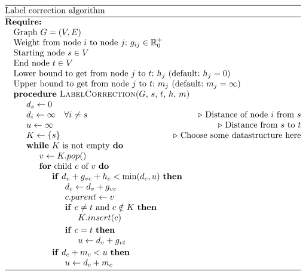

The label-correction algorithm is a generalization which includes very common graph search algorithms like breadth first search (BFS), depth first search (DFS), A*, Dijkstra's algorithm and Branch and bound as special cases.
Pseudocode
{kind=link}

Explanation:
First if: The left hand side is a lower bound to get from start to
v, to c and then to t. If this lower bound is not lower than
either u or the distance to c directly, then it will not be part
of the optimal solution.
Special cases:
- Depth-first search: K is a stack (LIFO list)
- Breadth-first search: K is a queue (FIFO list)
- Dijkstra's algorithm: K is priority queue
- A*: K ist priority queue, \(h_j\) is non-trivial
- Branch and bound: K ist priority queue, \(h_j\) and \(m_j\) are non-trivial
Python
#!/usr/bin/env python
"""Label Correction algorithm."""
import logging
import sys
logging.basicConfig(
format="%(asctime)s %(levelname)s %(message)s",
level=logging.DEBUG,
stream=sys.stdout,
)
class LIFO(list):
"""A LIFO storage."""
def insert(self, el):
self.append(el)
class Graph(object):
"""An undirected graph."""
def __init__(self):
self.nodes = []
self.edges = []
self.name2index = {}
self.index2name = {}
self.neighbors = []
def add_node(self, name=None):
"""Add a new node and return its index."""
node_index = len(self.nodes)
if name.startswith("index-"):
logging.warning('Node names beginning with "index-" may cause ' "problems.")
if name is None:
name = "index-%i" % node_index
self.nodes.append(node_index)
self.name2index[name] = node_index
self.index2name[node_index] = name
# Add weight from new node to other nodes and vice-versa
self.edges.append([])
for n1 in self.nodes:
self.edges[node_index].append(float("inf"))
if n1 != node_index:
self.edges[n1].append(float("inf"))
# From the node to itself has distance 0
self.edges[node_index][node_index] = 0
self.neighbors.append([])
return node_index
def get_node_index(self, name):
"""Get node index by name."""
return self.name2index[name]
def set_edge_by_name(self, a, b, weight):
"""
Set edge weight by node names.
Parameters
----------
a : str
First edge name
b : str
Second edge name
weight : number
New edge weight
"""
i1 = self.get_node_index(a)
i2 = self.get_node_index(b)
self.edges[i1][i2] = weight
self.edges[i2][i1] = weight
self.neighbors[i1].append(i2)
self.neighbors[i2].append(i1)
def label_correction(graph, start_node, t, h=None, m=None, K=None):
"""
Label correction algorithm for graph searches.
Parameters
----------
graph :
Needs 'graph.childs' which returns a list of child indices for each
node, 'graph.edges[node1][node2]' which always returns an edge weight,
start_node : int
Index of start node as given by the graph node iterator
t : int
Index of target node as given by the graph node iterator
h : lower_heuristic, optional
Takes (graph, node1, node2) and returns a number which underestimates
the distance from node1 to node2. If this is not given, the trivial
distance 0 is chosen.
m : upper_heuristic, optional
K : list-like data structure, optional
Needs 'insert', 'pop'
"""
if h is None:
h = lambda g, n1, n2: 0.0
if m is None:
m = lambda g, n1, n2: float("inf")
if K is None:
K = LIFO()
d = []
parents = []
for node in graph.nodes:
d.append(float("inf"))
parents.append(None)
d[start_node] = 0
u = float("inf") # shortest distance from start_node to t
K.append(start_node)
while len(K) > 0:
logging.info("K=%s" % str(K))
v = K.pop()
for c in graph.neighbors[v]:
if d[v] + graph.edges[v][c] + h(graph, c, t) < min(d[c], u):
d[c] = d[v] + graph.edges[v][c]
parents[c] = v
if c != t and c not in K:
K.insert(c)
if c == t:
u = d[v] + graph.edges[v][t]
u = min(u, d[c] + m(graph, c, t))
# Reconstruct the path
path, named_path = [], []
current = t
while current != start_node:
path.append(current)
named_path.append(graph.index2name[current])
current = parents[current]
path.append(current)
named_path.append(graph.index2name[current])
return {"shortest_distance": u, "path": path[::-1], "named_path": named_path[::-1]}
def sample_1():
"""A simple search problem."""
g = Graph()
for i in range(13):
g.add_node(name=chr(ord("A") + i))
g.set_edge_by_name("A", "B", 1)
g.set_edge_by_name("A", "C", 1)
g.set_edge_by_name("B", "D", 1)
g.set_edge_by_name("B", "E", 1)
g.set_edge_by_name("C", "F", 1)
g.set_edge_by_name("C", "G", 1)
g.set_edge_by_name("D", "H", 1)
g.set_edge_by_name("D", "I", 1)
g.set_edge_by_name("E", "J", 1)
g.set_edge_by_name("G", "K", 1)
g.set_edge_by_name("H", "L", 1)
g.set_edge_by_name("J", "M", 1)
i1 = g.get_node_index("A")
i2 = g.get_node_index("F")
ret = label_correction(g, i1, i2)
print(ret)
if __name__ == "__main__":
sample_1()